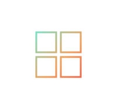
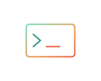

Back to CTF
Attack
All CTFs.
Boxes I found interesting during my OSCP prep. Each one is written up as the path from first foothold to full control, in plain steps, the way I'd explain it to someone stuck on the same machine.

windows · ad
Heist: a gMSA read all the way to SYSTEM
Heist
windows
Fish: a GlassFish traversal that reads its way in, then a WAR to SYSTEM
Fish
linux
Nibbles: PostgreSQL default creds, then a SUID find to root
Nibbles
linux
Snookums: a photo gallery LFI that became a shell, then PwnKit to root
Snookums
linux